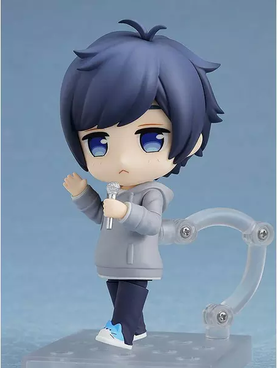
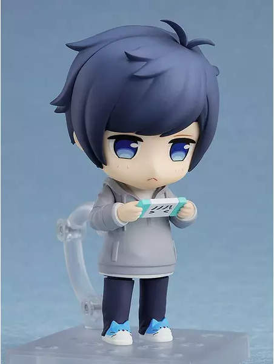

Nendoroid Soraru Utaite
Marca: Good Smile Company
Precio: 52.90€


Nombre del producto: Nendoroid 1703 Soraru Utaite
Personaje: Soraru - そらる
Licencia: N/A
Línea del producto: Nendoroid 1703
Fabricante: Good Smile Company
Artistas: Nendoron (Escultura), Shichibee (Escultura)
Especificaciones: Pintada, articulada, sin escala y fabricada en PVC y ABS.
Medidas (aprox.): 10 cms
Good Smile Company, dentro de su linea de figuras Nendoroid,
presenta la figura del popular músico Soraru. Se trata de una
figura de 10 cm de alto que viene con tres placas faciales
que incluyen una expresión estándar, una expresión dormida
y una expresión de ojos llorosos. Las piezas opcionales
incluyen un micrófono, una consola de juegos y una versión
estándar y con lágrimas en los ojos de Hanpen. Se incluye
también una base soporte para exposición.